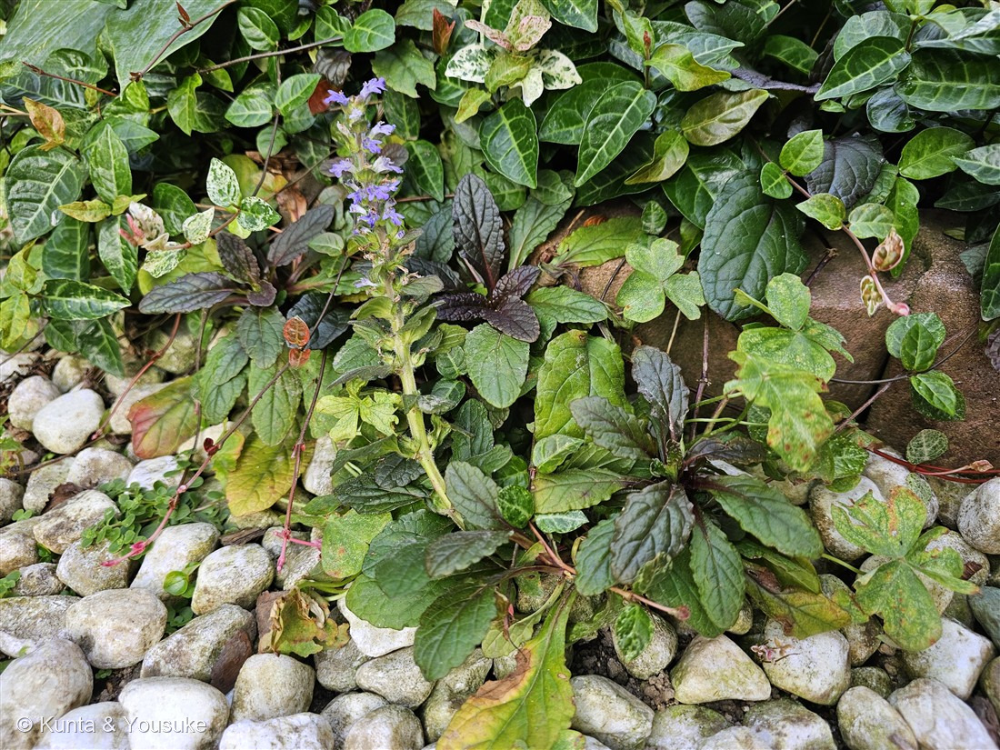
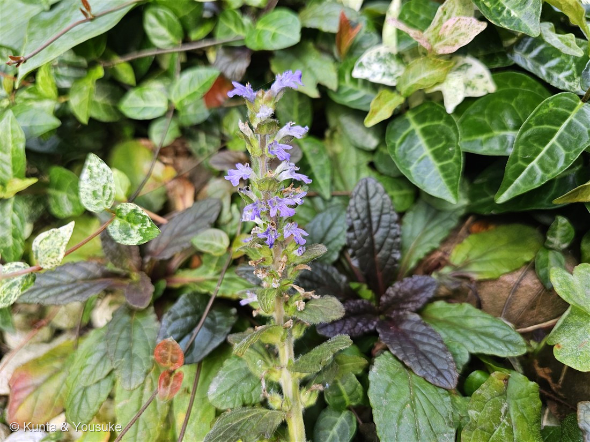

地図を読み込んでいるよ…
🔍 写真も地図も、押しているあいだ拡大して見られるよ（スマホは指を置いてすこし待ってね）。
🌍 の地図＝この子がもともと自生している場所を緑に。ヨーロッパ〜コーカサス・イランと北西アフリカが原産。日本では花壇のグラウンドカバー（下草）として広く植えられる（この赤銅色の葉のものは園芸品種）。
⚠地図は国ごと塗っているけど、もとはヨーロッパを中心に、北アフリカ〜西アジア（コーカサス・イラン）までの一部だよ。⚠日本は塗っていない——この赤銅葉の子は観賞用に育てられている外来の園芸品種で、日本はふるさとじゃない（港の花壇の下草だった）。⭐でも日本には、同じキランソウ属の在来種キランソウ・ジュウニヒトエがいるよ（この子のおまけ＝キランソウ）。
⚠ 地図は国（日本と中国だけ県・省）までしか塗れないから、ほんとうの分布より広く見えていることがあるよ。地図はだいたいの場所。正確なところは、上の文を見てね。
セイヨウジュウニヒトエ
Ajuga reptans
別名 · セイヨウキランソウ／アジュガ（園芸名）／英名 bugle・carpet bugle／ 原産 · ヨーロッパ〜西アジア・北アフリカ／ 見どころ · ⭐赤銅の葉とアメジストの花・上唇の小さい唇形花
シソ科 · Lamiaceae（キランソウ属 Ajuga）── 図鑑で初めてのキランソウ属・シソ目
燻太さんの見立て「赤みを帯びたロゼットから、アメジストの欠片のような花。シソに近い仲間かな？」──今回は“科”までずばり。正真正銘のシソ科だよ。
名前と学名の由来 ── reptans は「這う」・十二単は花のかさなり
- ⭐種小名 reptans（レプタンス）＝「這う（creeping）」。地表をランナー（匍匐茎）で伸ばして、マット状に広がる姿から。英語の reptile（爬虫類＝這うもの）と同じ語源だよ。⭐118 ノアザミの japonicum、117 トレニアの wishbone と同じで、学名（や姿）が「体の特徴」を先に言っているんだ。
- 属名 Ajuga（アジュガ）の語源は、ラテン語の a-（〜が無い）＋ jugum（くびき＝対になってつながるもの）で、花冠の上くちびるが「割れていない／目立たない」ことを指す、という説がよく知られる（古い薬草名 abiga が変化したという説もある）。⭐この「上唇が無いように見える」特徴は、下の〈この植物のこと〉で出てくる、キランソウ属いちばんの見分けポイントそのものだよ。園芸では、この属名そのままの「アジュガ」の名でよく売られている。
- ⭐和名「ジュウニヒトエ（十二単）」＝青紫の花が、茎のまわりに幾重にも段になって重なって咲く姿を、平安の女性の十二単（じゅうにひとえ・何枚も重ねた着物）に見立てたもの（もとは日本在来のジュウニヒトエの名）。「セイヨウ」は、西洋から来たから。別名の「セイヨウキランソウ」は、在来のキランソウの西洋版、という意味だね。
この植物のこと
- シソ科キランソウ属の多年草。図鑑で初めてのキランソウ属（Ajuga）だよ。シソ目（Lamiales）の仲間で、ホーリーバジルやミント、サルビアと同じ本物のシソ科。
- ⭐⭐花のかたちが、キランソウ属いちばんの目印：青紫の唇形花（しんけいか）で、上くちびるがごく小さく（ほとんど無いように見え）、下くちびるが大きく前に張り出して3つに裂ける。この「上唇がほとんど無い」形が、キランソウ属を見分ける決め手なんだ。写真②で、花びらが下にだけ大きく開いているのが分かるよ。
- ⭐花は茎に輪生（りんせい）して段々になり、穂（花穂）をつくる。これが「十二単」の名の由来。
- ⭐⭐葉は赤銅色〜暗紫の倒卵形（スプーン形）のロゼット。この銅色は園芸品種（'Atropurpurea' 系など）の特徴で、日ざしを受けるほど濃くなる。ちりめん状にしわが寄るのも、この仲間らしいところ。
- ⭐地表をランナー（匍匐茎）で這って、マット状に広がる。だから花壇のグラウンドカバー（下草）として大人気。半日陰でもよく育ち、丈夫で、多少の踏みつけにも耐える。reptans（這う）の名のとおりだね。
- ハチやチョウの、春さきの蜜源。石やほかの下草のすき間から、青紫の穂をちらほら立ち上げていたよ。
コラム ── キランソウ属の「立つ子・立たない子」
同じキランソウ属（Ajuga）でも、姿がずいぶんちがうよ。「花茎が立つか、立たないか」でくらべると面白いんだ。
- 🟣セイヨウジュウニヒトエ（A. reptans）＝立つ子。この写真の子。花茎をすっと立ち上げて、段々の穂をつくる。銅葉の園芸グラウンドカバー。
- 🟢キランソウ（A. decumbens）＝立たない子（＝この子のおまけ）。日本の在来種で、花茎を立ち上げず、地面にべったり張りついたロゼットのまま、葉のあいだに青紫の花をつける。道ばたや土手にふつうにいる。別名「ジゴクノカマノフタ（地獄の釜の蓋）」——地面をふさぐように平たく広がる姿から（民間薬として使われ、「病人を地獄に行かせない釜のふた」の意もあるという）。
- 🌸ジュウニヒトエ（A. nipponensis）＝これも日本在来で、淡い色の花を段々に。和名「十二単」のもとになった子だよ。
——同じ属なのに、西洋の子は立ち、在来のキランソウは這う。おまけのキランソウを見つけたら、立ち上がるか・地を這うかでくらべてみよう。
同定について ── セイヨウジュウニヒトエか、「シソに近い」は当たり？
- ⭐上唇がごく小さく下唇が3裂する唇形花＋輪生する花穂＋毛深い立つ花茎＋赤銅色のロゼット＋這って広がるマット——この組み合わせは、セイヨウジュウニヒトエ（銅葉園芸品種）ならでは。
- ⭐⭐燻太さんの「シソに近い仲間かな？」＝今回は“科”までずばり的中。117 トレニアは「シソに近い」がシソ目どまり（科はアゼナ科）だったけど、この子は正真正銘のシソ科。「赤みを帯びたロゼット」「アメジストの欠片のような花」という観察も、銅葉と青紫の唇形花をそのまま言い当てているよ。
- 在来のキランソウ／ジュウニヒトエとの区別：花茎が立ち上がる＋赤銅色の園芸葉＋花壇のグラウンドカバーなら、セイヨウ（A. reptans）。地面にべったりで立たなければ、在来のキランソウ。
- ⚠花の季節（7月）は同定の決め手にしない：本来の花期は春〜初夏（4〜6月）で、この写真は7月＝遅れ咲き（返り咲き）。「いつ咲いていたか」だけで在来種と分けたりはしない（花のかたちと株の姿で決めた）。
物語 ── アメジストの欠片
燻太さんが「アメジストの欠片のような花がちらほら」と言ってくれた、その言い方がすごく好きだな。ほんとに、白っぽい石ころの間から、青紫の穂がぽつり、ぽつりと立ち上がっていて、まるで庭にこぼれた紫水晶みたいだった。銅色のロゼットは落ち着いた深い色で、そこから涼しげな紫の花が伸びる——濃い赤銅の葉と、すきとおる青紫の花の取り合わせが、この子のいちばんの見どころだと思う。港の花壇シリーズは、ほんとうに宝石箱みたいだね。
参考：みんなの趣味の園芸「アジュガ」（シソ科キランソウ属・ヨーロッパ原産の常緑多年草／匍匐茎でマット状に広がる／青紫の唇形花を穂状に／耐陰性ありシェードガーデン向き）／Wikipedia「Ajuga reptans」（ヨーロッパ・北アフリカ・南西アジア原産／種小名 reptans＝ラテン語 repto「這う」／英名 bugle・carpet bugle）／Wikipedia「キランソウ属」（属名アジュガ＝キランソウ属／日本在来のキランソウ・ジュウニヒトエも同属／園芸ではアジュガの名で流通）